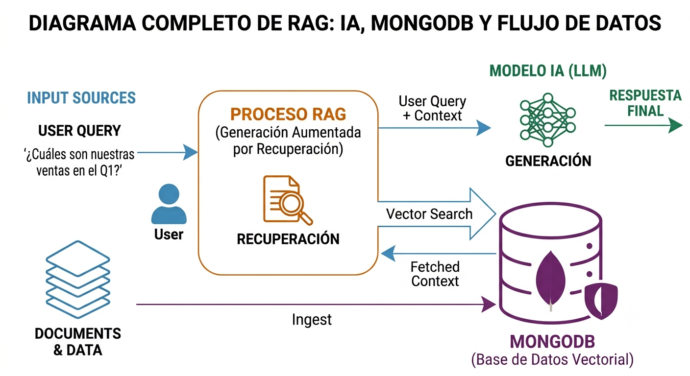

MongoDB Vector Search Skillv1.7.1
Una skill para preparar conocimiento multimodal y multiformato, generar embeddings con Voyage AI, almacenarlos en MongoDB Atlas (con soporte de versionado) y recuperarlos con búsqueda vectorial e integración directa de solo lectura con Atlassian (Confluence y Jira, acotado automáticamente a Comercio Unificado) mediante un servidor MCP local.
Propósito
Este proyecto permite:
- Ingestar documentos en formato Markdown, Texto/Código (
.txt,.csv,.xml,.json,.js,.html,.htm,.properties,.sh,.bat,.sql, etc.), archivos empresariales Enactor (.process,.page,.layout,.theme,.style,.message,.flf,.def,.xsd,.wsdl), Office (.docx,.xlsx), PDF, imágenes (.jpg,.jpeg,.png,.gif,.bmp,.webp,.ico,.svg) y metadatos de binarios/archivos empaquetados/certificados (.jar,.class,.zip,.tar,.gz,.key,.lic,.cer,.crt,.jks). - Etiquetar lotes de documentos con un campo de versión (
--version/DOCUMENT_VERSION). - Dividir el contenido en chunks para mejorar la recuperación semántica.
- Generar embeddings con Voyage AI (
voyage-4-largeyvoyage-multimodal-3.5). - Guardar los documentos y sus vectores en MongoDB Atlas con validación de cambios por checksum MD5.
- Notificar automáticamente a Google Chat (Webhook) un resumen consolidado al finalizar la ingesta o reemplazo de documentos.
- Ejecutar búsqueda vectorial (
mongodb_vector_search), búsqueda por ID (find_by_document_id) y consultas en tiempo real a Confluence (search_confluence,read_confluence_page) y Jira (search_jira_issues,read_jira_issue) expuestas pormcp-server.js.
La idea principal es soportar un flujo completo de Retrieval-Augmented Generation (RAG), búsqueda semántica sobre repositorios/documentación técnica local y consulta directa a fuentes corporativas en Atlassian Cloud.

¿Cuándo usar esta skill?
Es útil cuando necesitas:
- Construir una búsqueda semántica sobre documentación técnica, bases de conocimiento empresariales (como
enactor-kb) o repositorios internos. - Ingestar fuentes de texto, código, configuraciones XML/XSD/WSDL, artefactos Enactor (
.process,.page,.message,.flf,.jar,.class), documentos Office (.docx,.xlsx),.pdfo imágenes (.jpg,.jpeg,.png,.gif,.svg, etc.). - Consultar páginas de Confluence o tickets de Jira desde el agente de IA mediante herramientas MCP.
- Generar embeddings para documentos y consultas con el mismo modelo y dimensiones compatibles (
1024). - Validar una configuración de Atlas Vector Search, embeddings, Atlassian API o MCP server.
Requisitos
Antes de usar la skill debes tener:
- Conexión activa a la VPN corporativa: Indispensable para conectarse, obtener información (búsqueda semántica) e ingestar documentos en la bóveda de conocimiento de MongoDB Atlas.
- Node.js y npm instalados.
- Python 3 disponible en el entorno activo.
- Una instancia de MongoDB Atlas con soporte a Atlas Vector Search.
- Una API key válida de Voyage AI.
- (Opcional) Un API Token de Atlassian Cloud (
ATLASSIAN_API_TOKEN) para las herramientas de Confluence y Jira. - Un archivo
.envcon las variables necesarias.
Instalación
- Instala dependencias de Node:
npm install- Instala dependencias de Python requeridas por la ingesta y los embeddings:
python3 -m pip install pymupdf pillow voyageai python-dotenv python-docx openpyxl pymongo certifi- Crea un archivo
.enven la raíz del proyecto con variables como estas:
# MongoDB configuración
MONGODB_URI="mongodb+srv://<usuario>:<password>@<cluster>.mongodb.net/"
MONGODB_DB="knowledgeVectors"
MONGODB_COLLECTION="knowledge"
VECTOR_INDEX_NAME="vector_index"
VOYAGE_API_KEY="<tu_api_key>"
DOCUMENTS_PATH="/ruta/a/documentos"
DOCUMENT_VERSION="1.0.0"
# Configuración de Chunks
CHUNK_SIZE=1500
CHUNK_OVERLAP_SENTENCES=1
# Webhook para notificaciones de Google Chat
GOOGLE_CHAT_WEBHOOK_URL="https://chat.googleapis.com/..."
# Configuración de Atlassian (Confluence & Jira — Comercio Unificado)
ATLASSIAN_DOMAIN="https://tu-dominio.atlassian.net"
CONFLUENCE_ALLOWED_SPACES="CU"
JIRA_ALLOWED_PROJECTS="CM,CPI,CUD,CUQ"
ATLASSIAN_API_TOKEN="<tu_atlassian_api_token>"El archivo
.envno debe subirse al repositorio si incluye secretos reales.
Variables de entorno relevantes
Estas son las variables que usa el proyecto:
MONGODB_URI: cadena de conexión a MongoDB Atlas (requiere VPN corporativa activa).MONGODB_DB: base de datos de destino. Por defecto:knowledgeVectors.MONGODB_COLLECTION: colección donde se almacenan los chunks. Por defecto:knowledge.VECTOR_INDEX_NAME: nombre del índice vectorial en Atlas. Por defecto:vector_index.VOYAGE_API_KEY: clave para el servicio de embeddings de Voyage AI.DOCUMENTS_PATH: ruta por defecto para el directorio con documentos a ingerir.DOCUMENT_VERSION: versión opcional por defecto asignada a los documentos ingeridos (también configurable vía--version).CHUNK_SIZE: longitud aproximada de cada chunk de texto (por defecto1500).CHUNK_OVERLAP_SENTENCES: superposición de oraciones entre chunks (por defecto1).GOOGLE_CHAT_WEBHOOK_URL: (Opcional) URL del webhook de Google Chat para enviar la notificación resumen al finalizar la ingesta.EMBED_BATCH_SIZE: tamaño del lote para embedding en batch.ATLASSIAN_DOMAIN: dominio de Atlassian Cloud (ej.https://liverpooldigital.atlassian.net).ATLASSIAN_API_TOKEN: token de API de Atlassian para autenticar peticiones REST a Confluence y Jira medianteAuthorization: Bearer <ATLASSIAN_API_TOKEN>(soporta Scoped API Tokens de solo lectura enrutados automáticamente víaapi.atlassian.com/ex/{product}/{cloudId}).CONFLUENCE_ALLOWED_SPACES: lista separada por comas de claves de espacios permitidos en Confluence (por defectoCU— Comercio Unificado).JIRA_ALLOWED_PROJECTS: lista separada por comas de claves de proyectos permitidos en Jira (por defectoCM,CPI,CUD,CUQ— proyectos de Comercio Unificado).
Flujo de trabajo y Arquitectura (Architecture & Workflow)
La arquitectura de esta skill se divide en dos fases principales: Ingesta de Datos (Python) y Servidor MCP Multimodal + Atlassian (Node.js). Ambos procesos interactúan con servicios de Inteligencia Artificial (Voyage AI), persistencia vectorial en la nube (MongoDB Atlas) y servicios corporativos (Atlassian Confluence/Jira y Google Chat).
Diagrama de Arquitectura de la Skill

Diagrama de Flujo de Todos los Caminos Posibles (Decision Flowchart)
El siguiente diagrama detalla todas las rutas de ejecución posibles coordinadas por el Agente IA / Usuario, incluyendo validación estática, ingesta multimodal/multiformato, búsqueda semántica en MongoDB, consulta a Confluence/Jira vía MCP y resolución de fallos:

El flujo principal paso a paso es el siguiente:
1. Preparar los documentos
El proyecto acepta una amplia variedad de formatos a través de loaders.py:
- Markdown:
.md(procesa el texto, decodifica imágenes incrustadas en Base64data:image/...y carga imágenes referenciadas localmenteo<img src="...">). - Texto, Código y Configuración:
.txt,.csv,.xml,.json,.js,.html,.htm,.properties,.sh,.bat,.sql,.svg. - Archivos Empresariales Enactor:
.process,.page,.layout,.theme,.style,.message,.flf,.def,.xsd,.wsdl. - Office:
.docx: extrae los párrafos de texto y todas las imágenes embebidas en el documento..xlsx: convierte las hojas y celdas en líneas de texto estructuradas.
- PDF:
.pdf(cada página se convierte a bloque multimodal con texto extraído + imagen renderizada). - Imágenes:
.jpg,.jpeg,.png,.gif,.bmp,.webp,.ico(se convierten a RGB y se procesan como entrada multimodal con Voyage AI; si una imagen está corrupta o vacía, se genera un bloque descriptivo de respaldo). - Binarios, Empaquetados y Certificados:
.jar,.war,.ear,.zip,.tar,.gz,.tgz,.class,.key,.lic,.cer,.crt,.jks,.keystore(extrae listado de contenido interno de archivos comprimidos, cadenas legibles de bytecode.classo metadatos/hashes SHA-256 sin corromper el índice con bytes crudos).
2. Dividir contenido en chunks
chunker.py segmenta el texto para crear bloques manejables. El proceso genera chunks con metadata como:
documentIdchecksumversion(opcional, cuando se especifica--versionoDOCUMENT_VERSION)source.pathfileTypemodalitypagechunkIndextextembeddingembeddingModel
La lógica de ingest.py evita volver a insertar archivos sin cambios usando un checksum MD5 (y si se indica --version sobre un documento ya existente con el mismo checksum, actualiza únicamente el campo version sin recalcular embeddings).
3. Generar embeddings
embeddings.py encapsula la API de Voyage AI.
El proyecto usa modelos configurados por extensión, y todos los documentos que compartan un mismo índice vectorial deben usar un modelo compatible con el mismo índice.
Modelos por defecto:
- Texto y Código:
voyage-4-large - Multimodal (PDF, DOCX, Markdown con imágenes, Imágenes):
voyage-multimodal-3.5 - Dimensión del embedding:
1024
4. Persistir en MongoDB Atlas
mongodb.py gestiona:
- conexión segura a MongoDB Atlas (con certificados TLS vía
certifi) - inserción masiva de documentos embebidos
- comprobación de checksums
- actualización de etiqueta
version - eliminación de documentos previos por
documentIdcuando cambia el contenido
5. Ejecutar búsqueda vectorial y herramientas Atlassian MCP
El servidor MCP se inicia con:
node mcp-server.jsLas herramientas disponibles en mcp-server.js son:
Herramientas de MongoDB Atlas
mongodb_vector_search: Búsqueda semántica usando$vectorSearch.vector: arreglo de números (1024floats) que representa el embedding de la consulta.limit: número máximo de resultados, por defecto5.numCandidates: cantidad de candidatos a evaluar, por defecto50.path: campo vectorial dentro del documento, por defectoembedding.- Proyecta:
documentId,text,page,chunkIndex,fileTypeyscore($meta: "vectorSearchScore").
find_by_document_id: Búsqueda exacta por ID de documento.documentId: (Requerido) string que representa el ID del documento a buscar.
Herramientas de Atlassian (Confluence y Jira — Comercio Unificado)
Todas las herramientas de Atlassian operan en modo solo lectura (
GET), soportan Scoped API Tokens mediante resolución automática decloudIdenapi.atlassian.comy aplican restricción obligatoria a los espacios y proyectos de Comercio Unificado (CONFLUENCE_ALLOWED_SPACES="CU"yJIRA_ALLOWED_PROJECTS="CM,CPI,CUD,CUQ").
search_confluence: Busca páginas y documentación en Confluence usando CQL (Confluence Query Language), restringido automáticamente al espacioCU. Distingue en cada resultado si el documento fue Creado (v1) o Modificado (vN), junto con fecha de creación y última modificación.cql: (Requerido) expresión CQL (ej.type = "page" ORDER BY lastmodified DESCotext ~ "MongoDB").limit: límite de resultados (por defecto5).
read_confluence_page: Obtiene el contenido completo (limpio de etiquetas HTML) de una página de Confluence por su ID, validando previamente que pertenezca a los espacios permitidos (CU).pageId: (Requerido) ID de la página de Confluence (ej."2823684097").
search_jira_issues: Busca tickets/issues en Jira usando JQL a través del endpoint/rest/api/3/search/jql, restringido automáticamente a los proyectos de Comercio Unificado (CM,CPI,CUD,CUQ).jql: consulta JQL (por defectoupdated >= -30d ORDER BY updated DESC).limit: máximo de issues a retornar (por defecto5).
read_jira_issue: Lee el detalle completo, descripción y últimos comentarios de un ticket de Jira, validando que pertenezca aCM,CPI,CUDoCUQ.issueKey: (Requerido) clave del ticket en Jira (ej."CUQ-1169","CUD-45").
Ingesta de documentos
La forma más directa de procesar una carpeta nueva es:
python3 ingest.py /ruta/a/documentosSi deseas etiquetar todos los documentos procesados con una versión específica (por ejemplo, la versión de un release o base de conocimiento):
python3 ingest.py /ruta/a/documentos --version "2.7.1784.105"(Si no pasas una ruta, el script usa DOCUMENTS_PATH o la ruta por defecto).
Si deseas forzar la actualización o re-ingesta de una carpeta completa o un archivo que ya fue procesado (borrando la versión anterior para evitar duplicados), utiliza:
python3 force_ingest.py /ruta/a/documentosAl finalizar el proceso de ingesta, se envía una única notificación consolidada a Google Chat (si GOOGLE_CHAT_WEBHOOK_URL está configurado) indicando el total de documentos nuevos, actualizados, sin cambios y la versión aplicada.
Ejemplo de uso de embeddings
Puedes generar un embedding para una consulta con Python:
from embeddings import VoyageEmbedding
voyage = VoyageEmbedding(api_key="<tu_api_key>")
query_vector = voyage.embed_query("¿Cómo funciona Atlas Vector Search?")
print(len(query_vector))Requerimientos y Definición del Índice Vectorial en Atlas
Antes de usar la búsqueda real, debes crear un índice de tipo Atlas Vector Search en MongoDB Atlas sobre la colección configurada (knowledge).
Definición JSON del Índice Vectorial (Atlas Vector Search Index)
Crea un índice de búsqueda vectorial en MongoDB Atlas con la siguiente definición:
{
"fields": [
{
"type": "vector",
"path": "embedding",
"numDimensions": 1024,
"similarity": "cosine"
}
]
}Importante:
- Nombre del índice: Debe coincidir conVECTOR_INDEX_NAME(por defecto:vector_index).
- Campo (path):embedding.
- Dimensiones (numDimensions):1024(producido porvoyage-4-largeyvoyage-multimodal-3.5).
- Métrica (similarity):cosineodotProduct.
Esquema del Documento en MongoDB (Schema & Metadata Spec)
Cada fragmento o imagen procesada se persiste como un documento BSON con la siguiente estructura:

Ejemplo de Documento en MongoDB:
{
"_id": { "$oid": "664b3a123f89a9c1e0123456" },
"documentId": "manual_usuario.docx",
"checksum": "d41d8cd98f00b204e9800998ecf8427e",
"version": "2.7.1784.105",
"source": {
"path": "/ruta/a/documentos/manual_usuario.docx"
},
"fileType": "docx",
"modality": "text",
"page": 1,
"chunkIndex": 0,
"text": "Introducción y configuración del sistema...",
"embedding": [0.01234, -0.05678, 0.08912, "... (1024 floats)"],
"embeddingModel": "voyage-multimodal-3.5",
"createdAt": "2026-10-21T18:00:00.000Z"
}Configuración del Cliente MCP (Agent Client Integration)
Para conectar este servidor MCP con clientes de IA (Antigravity, Claude Code, Claude Desktop, Cline, Gemini Code Assist, etc.), agrega la siguiente configuración en tu archivo de herramientas MCP (mcp_config.json, claude_desktop_config.json o mcp_settings.json):
{
"mcpServers": {
"mongodb-vector-skill": {
"command": "node",
"args": [
"/ruta/absoluta/a/mongodb-vector-skill/mcp-server.js"
],
"env": {
"MONGODB_URI": "mongodb+srv://<usuario>:<password>@<cluster>.mongodb.net/",
"MONGODB_DB": "knowledgeVectors",
"MONGODB_COLLECTION": "knowledge",
"VECTOR_INDEX_NAME": "vector_index",
"ATLASSIAN_DOMAIN": "https://tu-dominio.atlassian.net",
"CONFLUENCE_ALLOWED_SPACES": "CU",
"JIRA_ALLOWED_PROJECTS": "CM,CPI,CUD,CUQ",
"ATLASSIAN_API_TOKEN": "<tu_atlassian_api_token>"
}
}
}
}Estructura de archivos
.
├── chunker.py
├── embeddings.py
├── force_ingest.py
├── ingest.py
├── loaders.py
├── mcp-server.js
├── mongodb.py
├── package.json
├── query_mongo.js
├── query_mongo.py
├── test-find.js
├── GUIA_RAPIDA_LLM.md
├── MANUAL_INSTALACION_CONFIGURACION.md
├── README.md
├── SKILL.md
├── guia-rapida-llm.html
└── index.htmlDescripción por archivo
ingest.py: procesa directorios recursivamente, soporta--version, genera embeddings e inserta en MongoDB enviando un resumen final a Google Chat.force_ingest.py: herramienta que fuerza la re-ingesta de archivos, borrando versiones o duplicados previos por nombre.loaders.py: cargadores para Markdown, PDF, Office, código/configuración, artefactos Enactor, archivos comprimidos/binarios e imágenes.embeddings.py: wrapper para Voyage AI (voyage-4-largeyvoyage-multimodal-3.5) y enrutamiento de modelos por extensión.chunker.py: división del texto en chunks inteligentes con superposición de oraciones.mongodb.py: operaciones de persistencia, actualización de versión y validación de checksums en MongoDB.mcp-server.js: servidor MCP que expone las herramientas de búsqueda vectorial en MongoDB Atlas y consulta de solo lectura a Confluence y Jira (acotado a Comercio Unificado).GUIA_RAPIDA_LLM.md/guia-rapida-llm.html: guía rápida enfocada en instalar y usar la skill desde el chat del LLM mediante/mongodb-vector-skill.MANUAL_INSTALACION_CONFIGURACION.md: manual técnico detallado bajo el framework Diátaxis.index.html: documentación técnica interactiva generada a partir de esteREADME.md.SKILL.md: definición de la skill (v1.7.1) para uso del entorno de agentes.
Validación
Para validar el proyecto de forma estática, ejecuta:
npm testEste comando comprueba:
- sintaxis JavaScript de
mcp-server.js - compilación de archivos Python (
chunker.py,embeddings.py,loaders.py,mongodb.py,ingest.py) concompileall
Solución de problemas
Error de conexión a MongoDB
- Verifica que estés conectado a la VPN corporativa. Sin la VPN activa, el clúster no permitirá la conexión para obtener ni ingestar documentos.
- Revisa que
MONGODB_URIsea válida. - Verifica que el cluster esté disponible y que expongas la base de datos correcta.
- Comprueba el nombre del índice vectorial.
Error en consultas a Atlassian (Confluence / Jira)
- Verifica que
ATLASSIAN_API_TOKENyATLASSIAN_DOMAINestén configurados en.env. - Si utilizas un API Token con Scopes (
Create API token with scopes),mcp-server.jsresuelve automáticamente elcloudIdmediante/_edge/tenant_infoy enruta las peticiones conAuthorization: Bearer <ATLASSIAN_API_TOKEN>porhttps://api.atlassian.com/ex/{confluence|jira}/{cloudId}. - Asegúrate de que el token tenga únicamente permisos de lectura (
read:page:confluence,read:confluence-content.summary,search:confluence,read:jira-work). - Las búsquedas y lecturas están restringidas por defecto a Comercio Unificado (
CONFLUENCE_ALLOWED_SPACES="CU"yJIRA_ALLOWED_PROJECTS="CM,CPI,CUD,CUQ").
Error por falta de variables de entorno
- Asegúrate de cargar
.envantes de ejecutar la ingesta. - Verifica que
VOYAGE_API_KEYyMONGODB_URIexistan.
Resultados vacíos o pobres
- Confirma que el modelo usado para documentos y consultas sea compatible.
- Revisa que la dimensión del vector (
1024) coincida con la del índice. - Mejora la calidad de los chunks o reduce la cantidad de contenido por bloque.
Resumen
Esta skill (v1.7.1) combina:
- carga multiformato y multimodal de documentos (incluyendo bases de conocimiento completas como Enactor),
- etiquetado de versiones por lote (
--version), - generación de embeddings con Voyage AI,
- almacenamiento vectorial en MongoDB Atlas,
- recuperación semántica con
mongodb_vector_searchyfind_by_document_id, - integración directa de solo lectura con Confluence y Jira desde el mismo servidor MCP, soportando Scoped API Tokens y acotando automáticamente las consultas a Comercio Unificado.
Formas y Recomendaciones de Uso
Formas de Uso
- Invocación Directa de la Skill (
/mongodb-vector-skill): Pide al agente en lenguaje natural que busque contexto técnico, ingiere una carpeta o valide la configuración. - Herramientas MCP en Tiempo Real: El agente utiliza automáticamente
mongodb_vector_search,find_by_document_id,search_confluence,read_confluence_page,search_jira_issuesyread_jira_issuesegún la consulta. - Ejecución por Línea de Comandos (CLI): Ejecuta
python3 ingest.py /ruta --version "X.Y.Z"para ingestas masivas incrementales opython3 force_ingest.py /rutapara reconstruir vectores desde cero. - Flujo Híbrido (Atlassian + MongoDB Vector Search): Cruza normativas o tickets recientes de Confluence/Jira (Comercio Unificado) con el código y procesos almacenados en MongoDB Atlas.
Recomendaciones Operativas (Best Practices)
- Calibración de
$vectorSearch: ManténnumCandidatesentre10xy20xel valor delimit(ej.limit: 5, numCandidates: 50para preguntas puntuales;limit: 15, numCandidates: 150para análisis de flujos completos). Si un fragmento relevante pertenece a un documento extenso, encadenafind_by_document_idpara recuperar todas sus páginas/chunks. - Reanudación tras interrupciones: Prefiere siempre
ingest.pysobreforce_ingest.pyen repositorios grandes;ingest.pyverifica elchecksumMD5 y salta en milisegundos los archivos ya procesados. - Tokens Atlassian de Solo Lectura y Alcance Acotado: Utiliza Scoped API Tokens sin permisos de escritura (
write:*) y mantén activas las variablesCONFLUENCE_ALLOWED_SPACES="CU"yJIRA_ALLOWED_PROJECTS="CM,CPI,CUD,CUQ"en.env. - Seguridad y menor privilegio: Nunca subas el archivo
.envcon secretos reales al repositorio y utiliza usuarios de MongoDB con rolreadWrite(ingesta) oread(consulta MCP) acotados aknowledgeVectors.
Referencias internas
GUIA_RAPIDA_LLM.md/guia-rapida-llm.html: guía rápida enfocada en instalar y usar la skill desde el chat del LLM con/mongodb-vector-skill.SKILL.md: especificación de la skill v1.7.1.MANUAL_INSTALACION_CONFIGURACION.md: manual completo de instalación, configuración, formas de uso y recomendaciones bajo el framework Diátaxis.index.html: versión HTML interactiva de esteREADME.md.mcp-server.js: servidor MCP con herramientas de MongoDB Atlas, Confluence y Jira.ingest.py: flujo principal de ingesta y embeddings.